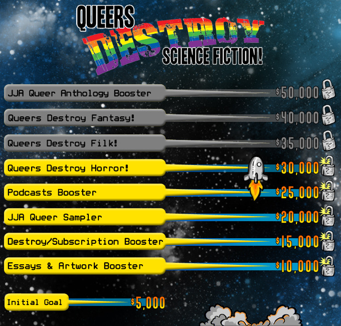

"Why was this character gay? It didn't add anything to the story."
"It was distracting how he had a husband instead of a wife. It made the story hard to read."
"If she was a lesbian, why didn't you say anything during her first appearance?
This feels like a retcon."
For this special issue, control of the magazine has been handed over to a talented team of queer creators:
Seanan McGuire, Guest Editor
Seanan McGuire (who also writes as Mira Grant) is the bestselling author of more than a dozen novels, with her latest releases being Symbiont, Midnight Blue-Light Special, The Winter Long, Half-Off Ragnarok, and Sparrow Hill Road. She is a ten-time finalist for the Hugo Award, as well as the 2010 winner of the John W. Campbell Award for Best New Writer. Her short fiction has appeared in the magazines Lightspeed, Apex, Fantasy, and Nightmare and in numerous anthologies, including Robot Uprisings, The End is Nigh, Wastelands 2, Glitter & Mayhem, Dead Man's Hand, Games Creatures Play, and The Mad Scientist's Guide to World Domination, among others. She is a regular blogger and dissector of media, and one of the contributors to the Hugo Award-winning podcast SF Squeecast. Find her on Twitter @seananmcguire.
Steve Berman, Reprint Editor
Steve Berman has edited more than thirty anthologies, including the Shirley Jackson Award finalist, Where Thy Dark Eye Glances: Queering Edgar Allan Poe and the annual series Wilde Stories: The Year's Best Gay Speculative Fiction, which has been a two-time finalist for the Lambda Literary Award. His gay YA novel, Vintage, was a finalist for the Andre Norton Award. He founded Lethe Press, one of the larger LGBT publishers, in 2001. He resides in New Jersey, the only state in the Union with an official devil.
Paul Boehmer, Podcast Producer
Paul Boehmer attended his first Shakespearean play while in high school; he knew then that he was destined to become the classically trained actor he is today. Graduating with a Masters Degree, Paul was cast as Hamlet by the very stage actor who inspired his career path. A nod from the Universe he'd chosen aright! Paul has worked on Broadway and extensively in Regional Theatre; coinciding with another of his passions, Sci-Fi, Paul has been cast in various roles in many episodes of Star Trek. Paul's love of literature and learning led him by nature to his work as a narrator for Books on Tape, his latest endeavour. Paul is married to the love of his life, Offir and they live in Los Angeles with their two midnight-rambling Tomcats Dread & David.
Cecil Baldwin, Podcast Host
Cecil Baldwin is the voice of the wildly popular podcast Welcome to Night Vale, written by Joseph Fink and Jeffery Cranor. Cecil plays Cecil Palmer, a radio host who reports on the strange goings-on in Night Vale, a desert community where monsters and conspiracies are just daily occurrences.
Sigrid Ellis, Flash Fiction Editor
Sigrid Ellis is co-editor of the Hugo-nominated Queers Dig Time Lords and Chicks Dig Comics anthologies. She edits the best-selling Pretty Deadly from Image Comics and edited the Hugo-nominated Apex Magazine in 2014. She lives with her partner, their two homeschooled children, her partner’s boyfriend, and a host of vertebrate and invertebrate pets in Saint Paul, MN.
Mark Oshiro, Nonfiction Editor
What if you could re-live the experience of reading a book (or watching a show) for the first time? Mark Oshiro provides just such a thing on a daily basis on Mark Reads and Mark Watches, where he chronicles his unspoiled journey through various television and book series. He mixes textual analysis, confessional blogging, and humor to analyze fiction that usually makes him cry and yell on camera. He’s been nominated for a Hugo in the Fan Writer category in 2013 and 2014 for his work, and he’s nearly done with his first novel.
Wendy N. Wagner, Managing Editor
Wendy N. Wagner grew up in a town so small it didn’t even have its own post office, and the bookmobile’s fortnightly visit was her lifeline to the world. Her short fiction has appeared in magazines and anthologies including Beneath Ceaseless Skies,The Lovecraft eZine, Armored, The Way of the Wizard, and Heiresses of Russ 2013: The Year’s Best Lesbian Speculative Fiction. Her first novel, Skinwalkers, is a Pathfinder Tales adventure. An avid gamer and gardener, she lives in Portland, Oregon, with her very understanding family. Follow her on Twitter @wnwagner.
All of the money raised by this project will be used to fund the publication of the Queers Destroy Science Fiction! special issue and related stretch goals. Anything leftover after that will go toward the production of future issues of LIGHTSPEED.
